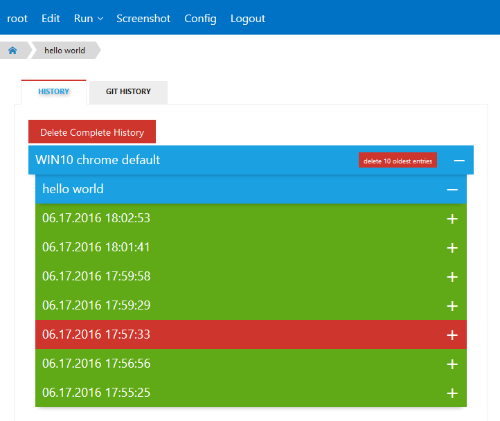
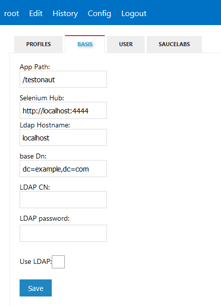
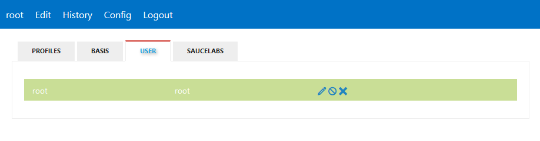

Create a new Page
Pagesettings
Run a test
History
Build history
In the History Section you can overwatch all runs. 
Delete history
You can delete the oldest run result, or the complete history.

Git history
All pages are under version control. You have under the tab section [git history] an overview over your page history.
You can make a checkout (btw a rewert) to older versions, or you can check the different between different revisions.
Checkout a older revision
With a click on the rewind button you make a checkout to a specific version.
View a different
For a comparison you selected two versions with a click on the compare symbol. And you get a different between the selected versions.
Screenshot
Screenshot comparison
Globalconfig
Basic

User

Saucelabs